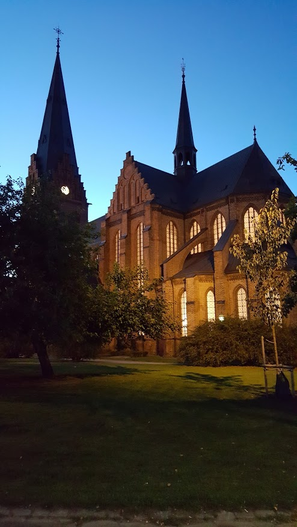
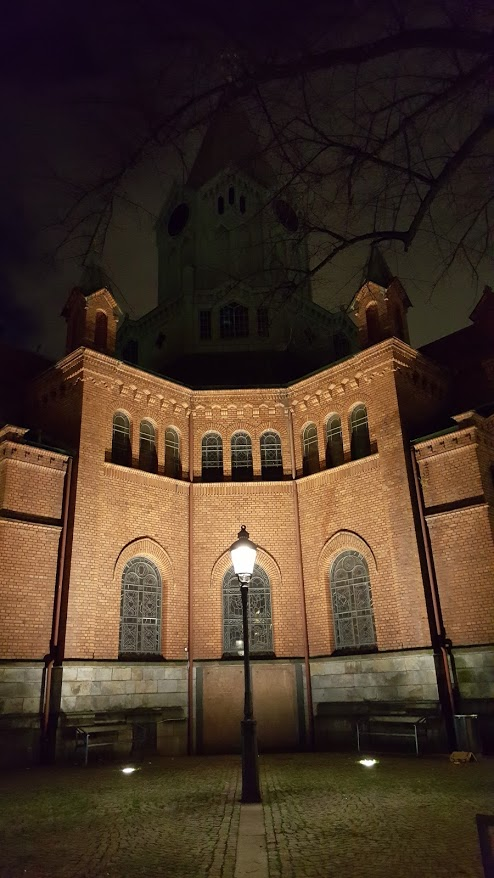
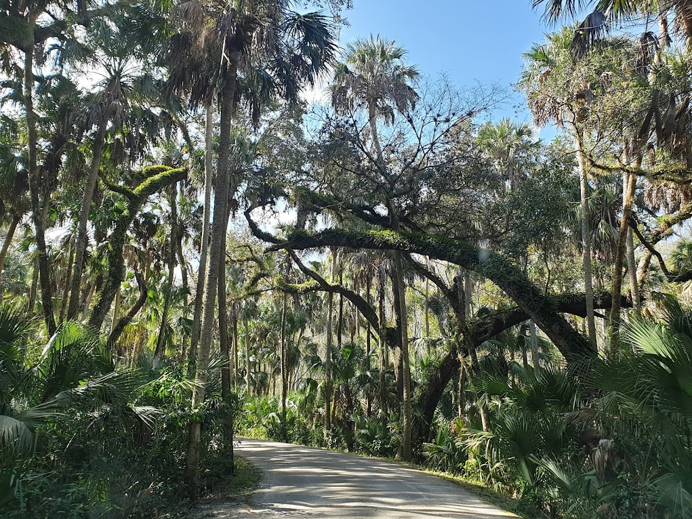
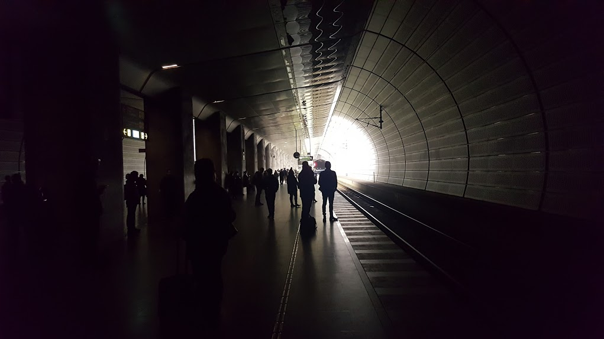
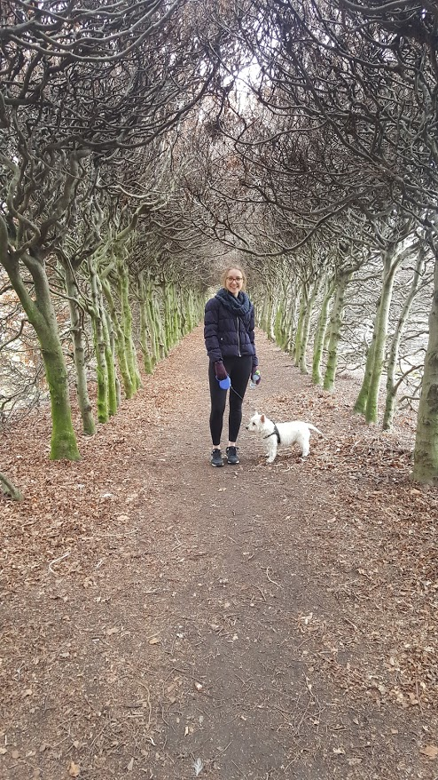
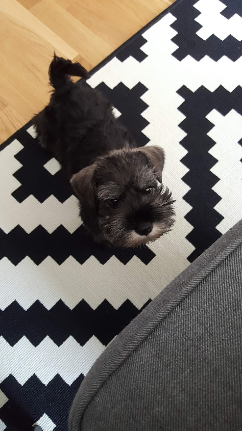
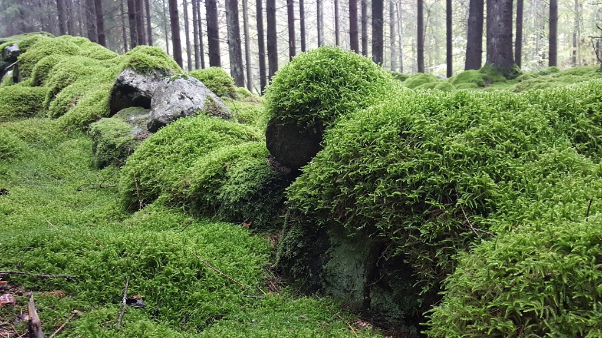

You are now visiting the gallery section of this homepage

A church in Malmö by night

A church in Malmö, however, not the same church as the other one

Close to where my mom lives in Sebring, Florida, there is a really cool Jurrasic Park-like state park

Almost all lights went out in the Triangeln metro station in Malmö

A photo from Malmö when my girlfriend Martina is walking her family-dog Ville

This is Voltaire when he was just a few months old

Trees and moss from a forest close to Hässleholm